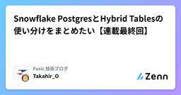

Fusic 技術ブログのフィード
https://zenn.dev/p/fusic
さまざまな個性を受け入れて有機的につなぐ社内環境を整える。あらゆる事業機会の創出と実現を繰り返し、世の中に対する視点を絶えず増やして成長していく。あっと驚くような角度から発展できるポイントを見つけ、そこにいい感じにフィットする形でテクノロジーを組み込んで、世の中をちょっとずつ、時
フィード

Amazon Bedrock AgentCore × Strands Agents × Snowflakeを実際にデプロイして動かしてみた
Fusic 技術ブログのフィード
はじめにFusicのレオナです。前回のブログでは、External OAuth + RAPを使って「エンドユーザーの権限をSnowflakeまで伝播させ、アクセス制御をSnowflake側に寄せる」構成案を整理しました。https://zenn.dev/fusic/articles/e1a7d7d3591184今回は実際にAmazon Bedrock AgentCoreへデプロイし、AgentCore上のエージェントからSnowflakeに接続して、Snowflake側で行レベルのアクセス制御ができるかを検証します。ただし、ブログではExternal OAuthによるエンド...
1時間前

Amazon Bedrock AgentCoreと Snowflakeで「ユーザー権限そのまま」アクセスする設計案
Fusic 技術ブログのフィード
はじめにFusicのレオナです。実運用でAIエージェントからSnowflake内にあるデータを検索するなら、サービスアカウント1つで代行するのではなく、External OAuthでエンドユーザーの身元をSnowflakeセッションへ対応づけ、行レベルの判断をデータ層(RAP)に任せる設計が候補になると思います。弊社の岡山のブログでは、SnowflakeのRow Access Policy(RAP)を使って「アプリ側のクエリを一切変えずにデータ層で権限を効かせる」手法を紹介しました。https://zenn.dev/fusic/articles/c5a5241df1820d...
14時間前

新卒1年目だった機械学習エンジニアがなぜJapan All AWS Certifications Engineerを目指したか
Fusic 技術ブログのフィード
はじめにFusicのレオナです。2026 Japan All AWS Certifications Engineersに選出していただき、無事All Certを名乗れるようになりました。https://x.com/xthixsl_ml/status/2069988878514282937?s=20本ブログでは、新卒1年目だった機械学習エンジニアがなぜAWS認定の全冠を目指したのか、そして全冠を通じて何が変わったのかを、備忘録としてまとめます。 背景もともと私はデータサイエンティスト志望で、大学では機械学習や深層学習モデルの開発を中心に学んでいました。新卒入社前にはAWSパ...
2日前

Apache IcebergをSnowflakeの機能を通して理解したい【結局どっち使うの編】
Fusic 技術ブログのフィード
はじめに〜Snowflake1人アドベントカレンダー、最終日〜こんにちは、Fusicの岡山です。Snowflake1人アドベントカレンダー、ついに最終日(30日目)です!!!!気合い入れてやっていきます！！前回は、Apache Icebergの「やらかしうるポイント」を、Snowflake-managedでどこまで再現できるかを実測しました。Apache IcebergをSnowflakeの機能を通して理解したい【気をつけるべきこと・実測編】いいね・フォローが毎日書き続けるモチベになります。よかったら是非お願いします！day27〜29で、Apache Icebergの...
2日前

ロボットアーム SO-101 Arms の作り方
Fusic 技術ブログのフィード
はじめにこんにちは！Fusicの大宮です。最近、"Physical AI"という単語をよく聞くようになりましたね。Physical AI という単語自体は、2024年ごろから生まれた言葉であり、NVIDIA の Jensen Huang が各所で述べていたことで広まったらしいです。NVIDIAのWEBページには以下のように記載があります。Physical AI lets autonomous systems like cameras, robots, and self-driving cars perceive, understand, reason, and perfo...
3日前

Apache IcebergをSnowflakeの機能を通して理解したい【気をつけるべきこと・実測編】
Fusic 技術ブログのフィード
はじめにこんにちは、Fusicの岡山です。Snowflake1人アドベントカレンダー29日目です。Snowflake毎日投稿も残すところあと2日となりました。気合い入れていきます。前回は、Apache Icebergのメリットを3つ、Snowflakeで実際に動かして確かめました。タイムトラベル、スキーマ進化、パーティション進化です。Apache IcebergをSnowflakeの機能を通して理解したい【メリット検証】いいね・フォローが毎日書き続けるモチベになります。よかったら是非お願いします！前回、最後にこんな結果が出ました。パーティション戦略を変えた2つのテ...
3日前

Apache IcebergをSnowflakeの機能を通して理解したい【メリット検証】
Fusic 技術ブログのフィード
はじめにこんにちは、Fusicの岡山です。Snowflake1人アドベントカレンダー28日目です。今日を含めてあと3回で終わると思うと、1か月があっという間だったなと思います。まだ終わってないんですが、終わった気になっている。前回：Apache IcebergをSnowflakeの機能を通して理解したい【特徴編】いいね・フォローが毎日書き続けるモチベになります。よかったら是非お願いします！前回は、Apache IcebergでのスナップショットでのACIDの確認・通常テーブルとのINSERTの比較までやってみました。。今回は「スキーマを後から変えたらどうなるか。過去...
5日前

Apache IcebergをSnowflakeの機能を通して理解したい【特徴編】
Fusic 技術ブログのフィード
はじめにこんにちは、Fusicの岡山です。Snowflake1人アドベントカレンダー27日目です。前回は、SnowflakeにGA4を繋いで可視化してみました。GA4が苦手なので、Snowflakeに繋いで可視化したいいいね・フォローが毎日書き続けるモチベになります。よかったら是非お願いします！最近、データ界隈で「Iceberg」という言葉をよく見るようになりました。day12〜14では、このApache Iceberg(オープンテーブルフォーマットの仕様)を、S3 Tables経由でSnowflakeから触りました。SnowflakeとS3 Tablesを連携させ...
6日前

GA4が苦手なので、Snowflakeに繋いで可視化したい 1
1
Fusic 技術ブログのフィード
はじめに〜GA4のデータ見たいけどGAを使いたくない〜こんにちは、Fusicの岡山です。Snowflake1人アドベントカレンダー26日目です。アドベントカレンダーは25日までらしいのですが、そういうイベントをしたことがないので、1ヶ月間毎日書くことをアドベントカレンダーと思っていました。なのでこのまま書き続けます。前回:【Snowflake】PostgresとHybrid Tablesの使い分けをまとめたい【連載最終回】いいね・フォローが毎日書き続けるモチベになります。よかったら是非お願いします！Zennでの投稿を始めて3週間くらいでしょうか。Zennの設定画面に...
6日前

Snowflake PostgresとHybrid Tablesの使い分けをまとめたい【連載最終回】
Fusic 技術ブログのフィード
はじめにこんにちは、Fusicの岡山です。Snowflake1人アドベントカレンダー25日目です。今回は4日にかけて、準備編からPostgres2日とHybrid Tablesの検証という形でやってきました。せっかくなので、この回だけ読んでわかるようにまとめたいと思います。いいね・フォローが毎日書き続けるモチベになります。よかったら是非お願いします！前回:Hybrid Tablesを動かしてSnowflake Postgresと比べてみる【連載4日目・Hybrid Tables編】この記事は、Snowflakeでトランザクション処理を扱う2つの機能、Snowflake...
7日前

Hybrid Tablesを動かしてSnowflake Postgresと比べてみる【連載4日目・Hybrid Tables編】
Fusic 技術ブログのフィード
はじめにこんにちは、Fusicの岡山です。Snowflake1人アドベントカレンダー24日目です。最近事前調査にかかる時間が課題です。どうしよう。何はともあれやるしかない。いいね・フォローが毎日書き続けるモチベになります。よかったら是非お願いします！前回:Snowflake PostgresのACIDとdata mirroringを検証してみる【連載3日目・詳細編】前回まではSnowflake Postgresのトランザクション挙動とdata mirroringを検証しました。今日はもう一方のHybrid Tablesを動かします。Snowflake Postgre...
8日前
NeMo RLでLLMの強化学習を実際にやってみた
Fusic 技術ブログのフィード
はじめにFusicのレオナです。NVIDIAが公開しているRLフレームワークNeMo RLをRTX 3090 Ti 24GBの環境で回せるかを試しました。手法はSFT → DPO → 報酬モデルの順で、NeMo RLのGPU 1枚向けのレシピをベースにしています。Qwen2.5-1.5B-Instructはすでにinstruction-tunedなモデルですが、ここに自分でSFTやDPOを足して下流タスクのスコアが上がるかを検証してみます。GRPOも起動までは試しましたが、学習を完走できなかったため、checkpoint評価やスコア比較には含めません。GPU 1枚向けのレシ...
9日前
Snowflake PostgresのACIDとdata mirroringを検証してみる【連載3日目・詳細編】
Fusic 技術ブログのフィード
はじめにこんにちは、Fusicの岡山です。Snowflake1人アドベントカレンダー23日目です。いろいろなところで「毎日投稿してるんだって？ヤバいね！！」って言っていただけることが増えてきました。一番ヤバいなと思っているのは私なので激しく同意しかないです。少しでもオモシロイと思ってもらえるように、これからもやっていきたいと思います。残り1週間気合い入れていきます！！ネタがない！！！！！いいね・フォローが毎日書き続けるモチベになります。よかったら是非お願いします！前回:Snowflake Postgresでカタログ連携できない問題とその解決【連載2日目・検証編】前...
9日前
Snowflake Postgresでカタログ連携できない問題とその解決【連載2日目・検証編】
Fusic 技術ブログのフィード
はじめにこんにちは、Fusicの岡山です。Snowflake1人アドベントカレンダー22日目です。いいね・フォローが毎日書き続けるモチベになります。よかったら是非お願いします！前回:SnowflakeのOLTP機能を比較したい：Snowflake Postgres / Hybrid Tables【連載1日目・準備編】前回は準備編として、Snowflake PostgresとHybrid Tablesの違い、OLTPとOLAPの背景を整理しました。今日は実機検証です。インスタンス作成からpsql接続、トランザクション検証、data mirroringまで一気にやるつもり...
10日前
SnowflakeのOLTP機能を比較したい：Snowflake Postgres / Hybrid Tables【連載1日目・準備編】
Fusic 技術ブログのフィード
はじめにこんにちは、Fusicの岡山です。Snowflake1人アドベントカレンダー21日目です。いいね・フォローが毎日書き続けるモチベになります。よかったら是非お願いします！前回:いろいろな媒体に散らばる会議議事録データを Snowflake の中だけで完結させたい今回は、これまで使ったことのなかった機能を取り上げます。普段は分析用途でしか使っていないSnowflakeですが、PostgreSQLやHybrid Tablesといったトランザクション(OLTP)系の機能が用意されています。分析とトランザクションで何が違うのか、実機で確かめてみたくなったので、今回は4回...
12日前
いろいろな媒体に散らばる会議議事録データを Snowflake の中だけで完結させたい
Fusic 技術ブログのフィード
はじめにこんにちは、Fusicの岡山です。Snowflake1人アドベントカレンダー20日目です。後10日！！！ちなみに7月からはSnowflake以外のテーマで毎日投稿が確定しています。やばすぎる。いいね・フォローが毎日書き続けるモチベになります。よかったら是非お願いします！前回:GAになった Snowflake Adaptive Computingの使い心地を試したい会議を録音するのが当たり前になってきた今日このごろ。Teams や Zoom、Google Meet などでは録音機能だけでなく、文字起こし機能も搭載されており、会議が終わったあとから何度でも見直...
13日前
GAになった Snowflake Adaptive Computingの使い心地を試したい
Fusic 技術ブログのフィード
はじめに ～使えるようになったから触ってみた～こんにちは、Fusicの岡山です。Snowflake1人アドベントカレンダー19日目です。いいね・フォローが毎日書き続けるモチベになります。よかったら是非お願いします！前回:「snowを叩くたびにブラウザに飛ばされる」を、Snowflake推奨の方式のまま消したい今回はAdaptive Computingという機能についてフォーカスする回です。ウェアハウスのサイズ、クラスター数、QASの設定など、これまで手動で決めていたものをSnowflakeが自動で判断してくれる、というものです。2026年6月にAWS上でGA（一般提供...
13日前
「snowを叩くたびにブラウザに飛ばされる」を、Snowflake推奨の方式のまま消したい
Fusic 技術ブログのフィード
はじめに〜AIに任せるほど、認証の手間が増える〜こんにちは、Fusicの岡山です。Snowflake1人アドベントカレンダー18日目です。いいね・フォローが毎日書き続けるモチベになります。よかったら是非お願いします！前回:【Snowflake】App Runtimeを寝かせて節約できるか、確かめてみたこのSnowflake毎日投稿、当然毎日検証したりするので、執筆画面からSnowsightに移動してSQLを叩くという作業が大量に発生します。この作業でかなり時間がロスしてしまうことに耐えられず、割と早めにsqlファイルを作ってClaude Code→snow CLIを叩か...
15日前
【Snowflake】App Runtimeを寝かせて節約できるか、確かめてみた
Fusic 技術ブログのフィード
はじめに〜前回デプロイしたアプリで検証する〜こんにちは、Fusicの岡山です。Snowflake1人アドベントカレンダー17日目です。前回:【Snowflake】App Runtimeを夜寝かせて節約できるか検証したい。昨日は、App Runtimeの夜間停止について、公式の制御手段を4つ整理したあと、AUTO_SUSPEND_SECSが外からのアクセスを見るかを確認するための検証用Next.jsアプリの作成とデプロイまでやりました。早速確かめていこうと思います!いいね・フォローが毎日書き続けるモチベになります。よかったら是非お願いします！ 今日の問い〜何を確かめる...
16日前
State-Aware RAGをAmazon Bedrock とAmazon S3 Vectorsで再現してみた
Fusic 技術ブログのフィード
はじめにFusicのレオナです。AWSが公開した論文「Reasoning with Memory: Adaptive Information Management for Retrieval-Augmented Generation」(以下、State-Aware RAG)は、検索 → 整理 → 推論を繰り返してマルチホップQAを解く枠組みで、ワーキングメモリを管理するExtractorという小さなLLMを別途SFT + GRPOで学習させる前提で評価されています。一方、論文Table 3では、学習済みの小型ExtractorではなくClaude 3.7 SonnetをExtra...
16日前